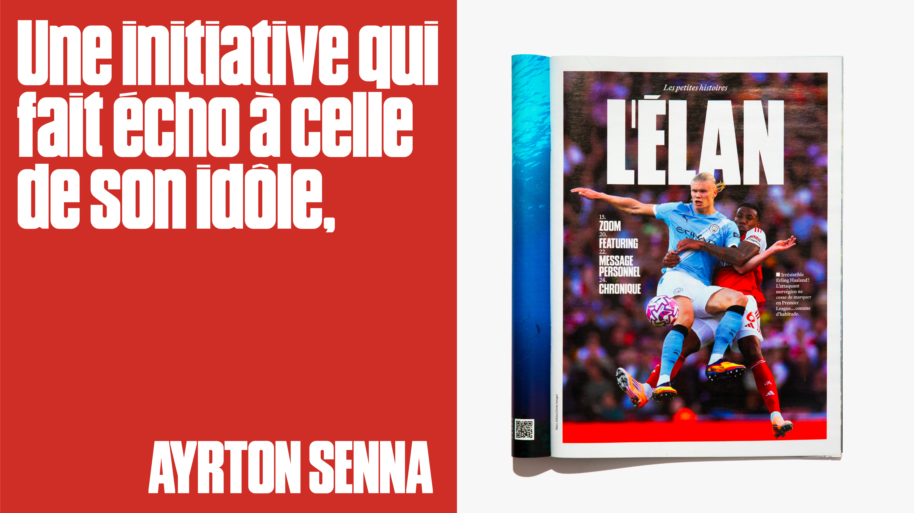
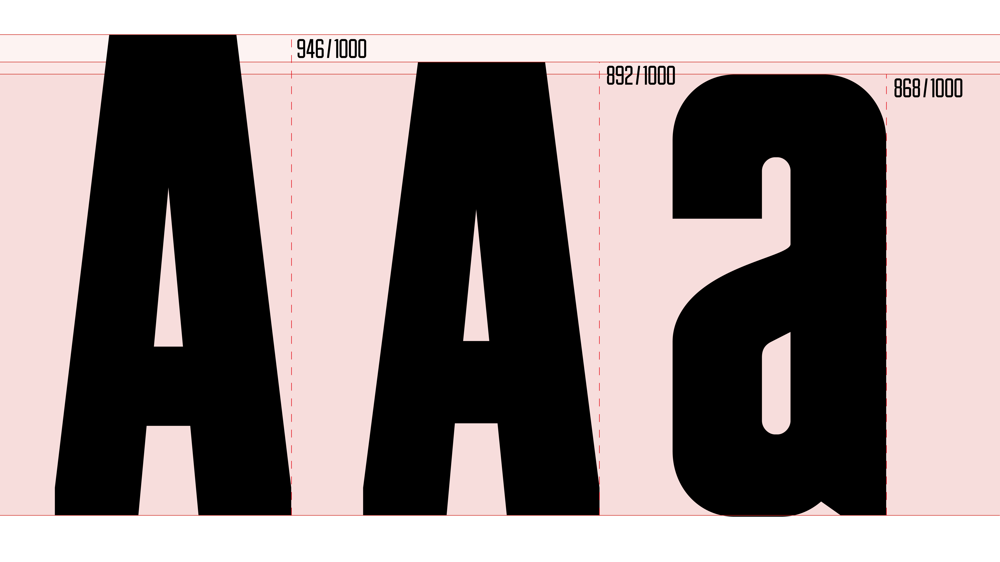
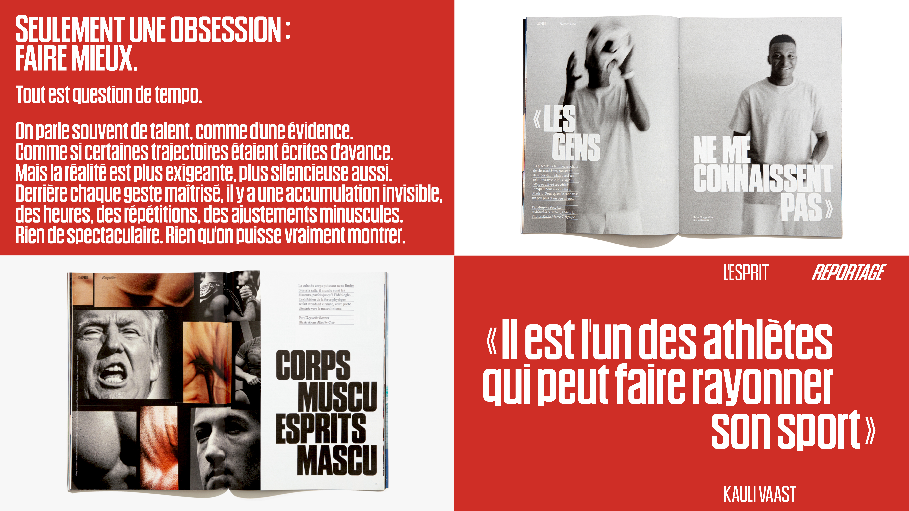
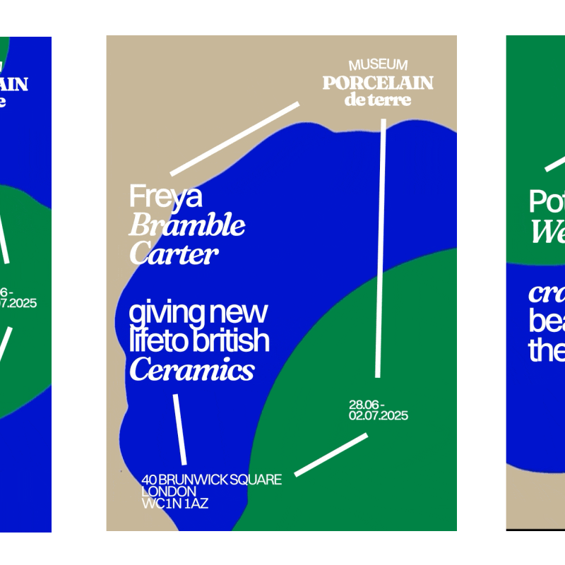

Premftbl
Designed and developed the visual style for @Premftbl, a football-focused social media account. Created consistent, branded templates to maintain visual cohesion across all posts and ensure a recognisable identity.


L'Equipe
Working with L'Equipe to create an animated system that showcases the typography. A flexible, motion-led identity with type at the core.





Mooose Skin Care
Working with Mooose Skincare to develop a full visual identity and motion system for launch. The outcome is a clear and flexible system, with simple, structured visuals and motion.


Museum of Porcelain
Created a complete branding system for a porcelain museum, developing a unified visual language and applying it across all aspects of the brand.



Temporary Platform
Campaign for a company raising awareness of the carbon impact of websites, showing how design choices like images, colours, and fonts affect online emissions.


Seasonal Living
Each hand-printed page represents time through seasonal colours, letting gradient, not clocks guide the reader. Centred on planting and growth, the book encourages nurturing vegetables with care and attention, reminding us that some things can't be rushed.


Hibakujumoku
This project is based on the hibaku trees, those that survived the atomic bombing of Hiroshima. Each dot on the layout marks the precise location of a surviving tree, forming a quiet map of resilience. Rather than imposing on them, the text shifts and flows around each dot, acknowledging the trees as steadfast, immovable presences within the design.